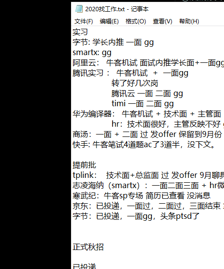

因为拿到了京东的提前批offer，2020秋招提前上岸啦~~
本来还想继续刷题准备，再面一面华为阿里这些，争取多拿几个offer的，但是东哥给的实在是太多了😆
感谢东哥，感谢室友们，感谢一起打卡刷题的yry同学，感谢leetcode和牛客网，感谢陈逊师兄和燕子师兄，感谢姜老师，感谢曹总的和牛火锅和海哥的红西凤。
今年因为疫情的关系一直在家，从三四月份就开始投实习，但是因为准备不充分的关系，最开始几乎都是一面挂。随着后来面得原来越多，尤其是被腾讯内部各种转岗各种面，也对面试的基本套路有了一个了解，加上寝室群里大家一直在交流，所以到后来也就慢慢有经验了，在这里分享下自己的经历和总结的经验。
技术面试（非算法岗）基本上就是自我介绍+项目介绍+计算机基础知识+现场coding，所以一个经验就是可以提前按照这几个部分去准备。
自我介绍可以突出一下自己的优点，给面试官留一个好印象。项目介绍都是对着简历说，所以要提前准备好自己的简历。简历一定要详略得当，突出项目，或者突出自己的成绩、奖项等优点。但不要太夸张，“精通C++”“代码能力优秀”这种还是要谨慎😰，最好可以找师兄或者比较专业的朋友帮着修改一下简历。不要吹牛，写自己不会或者不熟的东西，同理面试的时候也不要提不熟的东西（我有次提到了最近在学go语言，然后被问到过go routine是怎么实现的，然后场面就失去控制了😂）。
关于面试中各种具体知识点，可以去参考同寝大佬旺财的博客,他是算法岗，所以除了基础知识还有机器学习相关的要点。像排序算法（时空复杂度、是否稳定）、前序中序后序dfsbfs、红黑树哈希表，这些最基础最简单的数据结构和算法很爱考，还有就是操作系统（虚存机制、fork exec 、程序编译链接装载执行过程、elf、section segment区别（顺便推荐《链接装载与库》那本书）、进程地址空间布局、进程线程比较和原理、线程和协程区别、IPC同步互斥）、数据库（Mysql、Redis、索引）、网络（http、https、tcp三次握手四次挥手状态转移、tcp慢开始拥塞避免快重传快恢复、udp、io多路复用，ping命令背后发生了什么）、编译原理（x86汇编指令,函数调用过程esp ebp的操作、词法分析语法分析语义分析IR生成及优化代码生成、llvm pass、常见的优化手段），java/C++/go相关（我是C++，多态、virtual关键字、虚函数虚表指针、菱形继承、const和constexpr都问到过）,计算机组成原理（大小端）几乎不考，但也可以准备下，还有就是那种问题，几亿个数字，有限的内存，让你排序或者找出出现次数最多的。此外，聊项目的过程中，如果面试官刚好对你的项目所涉及的领域比较了解，也会深入地问一些问题，有技术问题，也有项目实现中你的作用和你的收获等等。之前面华为2012的编译器时那个面试官就对调试信息比较熟悉，问到了DWARF里面各种不同的section的作用以及gdb的实现原理。
还有一些比较笼统的经验，首先就是一定要多面，尤其是平时和陌生人交流有困难或者答辩/作报告时容易紧张的同学，只有多面才能克服这一点，第二个就是面试的时候要自信，不会也没关系，可以现场直编尽量说说自己的理解，或者虽然这个不会但是我会什么什么（一定是相关的），或者虽然我不知道它是怎么实现的，但是如果让我实现我会怎么做。总之就是不要轻易气馁和放弃，记得smartx的二面，面试官给我说，虽然答得磕磕绊绊，但是在他的提醒下总算能说个差不多，看在我不屈不挠的精神上还是给过了。。🌚
最后就是技术面几乎必考的coding环节了，coding这里大部分都是给一个算法题，少数实习招聘可能会给你一个工作中实际的小问题让你解决(比如之前面腾讯给了一个日志处理的任务，要求写一个程序把日志里的有效信息提取出来，主要考正则和字符串处理)。如果是ACM大佬就算了，普通人一定多刷题，刷的多了自然就会了，推荐leetcode和牛客网混合刷，我是主要在leetcode上刷，面试前再牛客上模拟一下，因为笔试和部分面试都是在牛客上，而且牛客需要自己实现输入输出，所以可以在牛客上练习一下输入输出。比如C++就是iostream和stringstream基本够用了。每天刷三道，每日一题再随便roll两道，或者按照之前面试/笔试暴露出的漏洞专门的专题训练一下。坚持几个月就有效果了。
还有一个经验就是，感觉面试中出的题一般不会太难，二分搜索、双指针、dfs bfs 加回溯、或者简单的dp基本顶天了（除了头条，头条就离谱），反而是大厂机试（阿里、pdd）这些会出一些比较难的，dp必考，再加状态压缩并查集前缀和各种技巧，几乎都是leetcode里的hard了，所以能内推还是尽量内推吧，机试真的容易让人自闭，做了半天结果超时一半的例子就很痛苦。如果leetcode里的hard都能得心应手，那么面试时候出的题几乎都可以解决了。
除了技术面，就是主管面和hr面了，大概感觉就是，主管也会问一些技术相关的，但更多的是通过聊天考察性格和三观方面的东西，也会问到你对未来的规划，或者接受不接受xxxx诸如此类的问题，hr面就比较偏重未来的规划，喜欢的城市，感兴趣的领域，以及手上目前有几个offer，分别给多少钱等等。
最后记录下找实习+秋招目前的战绩。后面可能再面下商汤阿里快手大疆，争取拿到更大的package！秋招冲冲冲！
